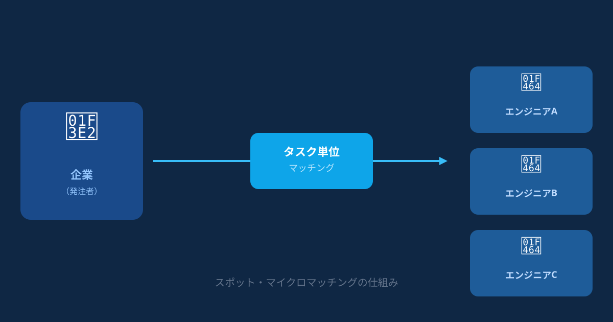
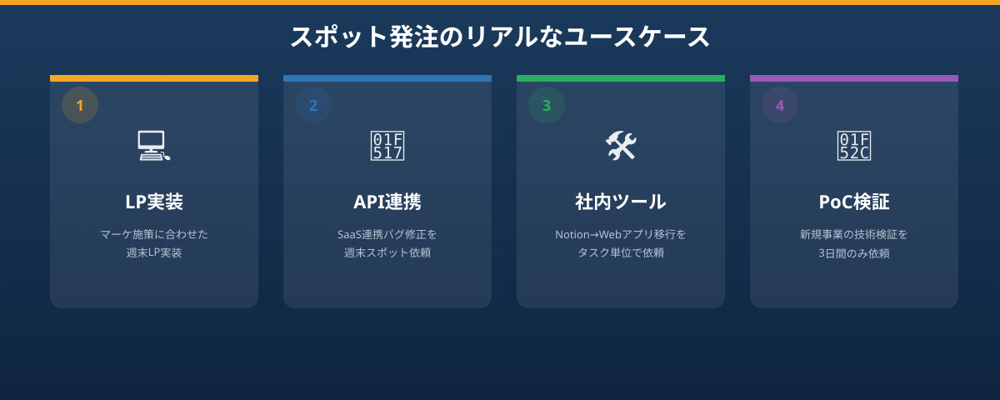

「ちょっとだけ手伝ってほしい」その一言が言えない開発現場の本音
あなたの会社にも、こんな光景はないでしょうか。マーケティング担当者がデザインを仕上げたLPが、エンジニアのスケジュールが合わないという理由だけで2週間も公開を待っている。バックオフィスで使っているシステムの小さなバグが、「優先度低」のラベルを貼られたまま何か月も放置されている——。
「1〜2日あれば終わりそうなのに」という仕事が、社内エンジニアのリソース不足によって滞っているケースは、中小企業やスタートアップに限らず、珍しいことではありません。
問題は、そのニーズが「小さすぎる」ことにあります。正社員エンジニアを採用するほどの業務量ではない。でも誰かに動いてもらわなければ前に進まない。こうした「ちょっとしたタスク」の蓄積が、チーム全体の開発速度を知らぬ間に下げていくのです。
経営者の立場から見れば、「週に1回だけ来て手伝ってほしい」「このタスクだけお願いできれば十分」という依頼の仕方が理想です。しかし、そうした柔軟で小さな単位の依頼を快く引き受け、かつ高い品質で仕事をこなしてくれる即戦力エンジニアを、どこで探せばよいのかわからないという声も多く聞かれます。
- 年に数回しかない大型プロジェクトのために正社員エンジニアを採用するのはコストが見合わない
- LP実装・API連携・バグ修正など「1〜2日で終わるタスク」が社内で積み上がっている
- 社内エンジニアは常に別プロジェクトで手一杯で、依頼するタイミングがつかめない
- 大手外注に問い合わせたら、想定の3〜5倍の見積もりが届いて諦めた
もし一つでも「そうだ」と感じたなら、この記事はあなたのために書かれています。次のセクションでは、まず従来の解決策がなぜうまくいかないのかを整理してから、新しい選択肢を提案します。
スポット外注は「安かろう悪かろう」？従来の解決策が抱える限界
開発リソース不足に直面した企業がまず検討するのは、大きく分けて次の3つの手段です。それぞれにメリットはあるものの、スポットかつ高品質という条件を同時に満たすのが難しいという共通の限界があります。
大手SIer・受託開発会社への外注は、品質という点では安心感があります。しかし、多くの場合、初期の要件定義や提案・見積もりだけで数週間かかります。また、小規模なタスクに対しても最低発注金額が設定されており、「ちょっとお願いしたいだけ」というニーズには明らかに過剰なコストと手間が伴います。稼働開始まで1〜2か月かかることも珍しくなく、緊急性の高い依頼には向きません。
クラウドソーシング（LancersやCrowdWorksなど）は、単価の観点では魅力的に映ります。ただ、登録者の品質にばらつきが大きく、実力のある人材を見極めるためには多数の応募の中から選考し、試作品を確認し、コミュニケーションを重ねるといったやり取りが必要になります。結果として、業務の発注よりも人材管理に時間を取られてしまう、という本末転倒な状況に陥るリスクがあります。
知人や人脈を通じた紹介は、信頼という意味では最も安心ですが、いつでも頼めるとは限りません。相手の状況やタイミングに左右される属人的な手段であり、組織として安定的に活用できるソリューションとはいえません。
つまり、従来の方法はそれぞれ「コスト」「品質」「スピード」のいずれかで妥協せざるを得ない設計になっていたのです。これはサービスの欠陥というよりも、従来の受発注モデルがそもそも「大きなまとまった仕事」を前提に設計されているためです。
マイクロ・マッチングなら、ハイスペックなエンジニアをスポットで確保できる

こうした課題に対する答えとして生まれたのが、ANKENが提供する「マイクロ・マッチング」という仕組みです。
マイクロ・マッチングとは、開発リソース不足を抱える企業と、スポットや副業で案件に取り組みたいエンジニアを、タスク単位・短期間という細かい粒度でつなぐマッチングサービスです。従来の受発注モデルの「大きすぎる」という問題点を、根本から解決するアプローチです。
メリット①｜固定費ゼロ・タスク単位から依頼できる低コスト設計
大手開発会社では「月額○十万円〜」という契約が一般的ですが、ANKENではタスク単位・スポット単位での依頼が可能です。初期費用も月額の固定費も発生しないため、開発予算に余裕がない時期でも気軽に活用できます。
「大手外注の数十分の一のコスト感」でプロフェッショナルに依頼できるため、「もったいない」と感じて後回しにしてきた小さな開発タスクにも積極的に手を入れられるようになります。スポットで試してみて、相性の良いエンジニアが見つかれば継続して依頼するという進め方も自由です。
メリット②｜メガベンチャー出身のAI・フルスタック人材に即アクセス
ANKENには、メガベンチャー企業や大手IT企業に本業を持ちながら、副業・フリーランスとして活動する実力派エンジニアが登録しています。彼らは日常的にハイレベルな開発業務をこなす中で培われたスキルを、空き時間に発揮したいという動機で参加しています。
特に、生成AIやLLMを活用したシステム開発、モダンなフロントエンド（React、Next.js）、API設計・インテグレーションなど、今求められている最新技術に強いエンジニアが多いのが特徴です。クラウドソーシングのように品質が読めない心配がなく、「ある程度の実力保証がある状態」でマッチングが始まる安心感があります。
メリット③｜面談の手間を最小化し、スピーディに稼働開始
採用活動や従来の外注では、要件のすり合わせ・複数回の面談・契約手続きと、実際に手が動き始めるまでに数週間から1か月以上かかるケースが少なくありません。ANKENはマッチングプロセスをシンプルに設計しており、依頼内容を登録すれば最短翌日からエンジニアが稼働できる体制を目指しています。
「今週中にこのタスクを終わらせたい」という緊急度の高い依頼にも対応できる機動力が、ANKENの大きな差別化ポイントです。
こんな場面で使えます｜スポット依頼のリアルなユースケース

「どんな仕事を依頼できるの？」という疑問を解消するために、実際に活用されているシーンをいくつかご紹介します。
マーケ担当がデザインカンプを作り上げたものの、社内エンジニアのスケジュールが2週間先まで埋まっていた。ANKENでフロントエンドエンジニアに週末2日間のスポット依頼をしたところ、月曜日の朝には実装が完了していた。
導入した新しいSaaSと既存の管理システム間でデータ連携のバグが発生。原因調査と修正を週末だけのスポット依頼で解決。ベンダーに問い合わせるよりも圧倒的に早く、コストも低く抑えられた。
スプレッドシートとNotionで運用していた社内管理フローが複雑化し限界に。GASやシンプルなWebアプリへの移行をタスク単位で依頼し、全体の作業を段階的に進めることができた。
新しいプロダクトのアイデアがあるが、本開発に踏み切る前に技術スタックの選定と小さなPoCだけを試したかった。3日間のスポット依頼で検証が完了し、意思決定に必要な情報が揃った。
まとめ
開発リソース不足は、採用でも大手外注でも解決が難しい「ちょうど良い手段がない」問題です。しかし今、タスク単位・スポット単価で即戦力エンジニアを確保できる「マイクロ・マッチング」という選択肢が、その空白を埋めつつあります。
固定費ゼロ・最低発注額なし・最短翌日稼働という設計は、予算とスピードに制約のある企業にとって、これまでにない現実的な解決策です。メガベンチャー出身のフルスタック・AI対応エンジニアが登録しているため、品質面での妥協も不要です。
「まず相談だけでも」という感覚で構いません。どんな依頼ができるか、どのくらいのコストや期間が目安かを確認するところから始めてみてください。
固定費ゼロ・登録無料。まずはどんな依頼ができるか確認するだけでもOKです。メガベンチャー出身の即戦力エンジニアへ、タスク単位でスポット依頼できます。
👉 無料で案件を相談してみる登録費用・固定費ゼロ。まず相談するだけでもOKです。